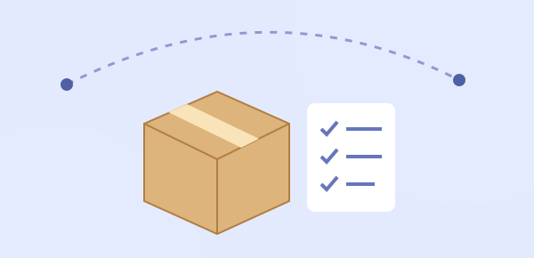
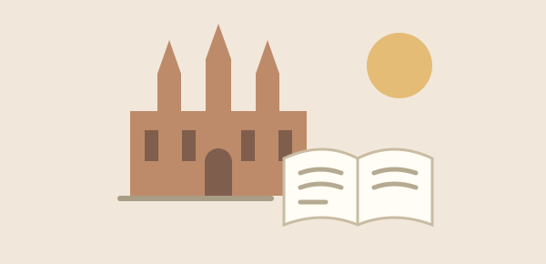
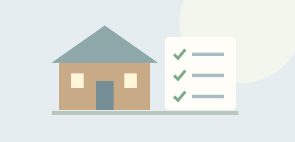

家财管家
账户、收支、资产负债与现金流预测，让家庭资金安排清晰可查。
数据保存在原站的当前浏览器
生活、知识与创作，从这里开始。
巴塞罗那气候、学校、租房与城市研究，集中查看专题和资料。

前往西班牙的运输清单入口，集中查看需要运送的物品。
收藏照片、中文标注与关键信息，留住日常识图中的发现。

打开巴塞罗那与西班牙的历史文化笔记，继续阅读与学习。
打开巴塞罗那小小探索地图，发现家附近的去处。

打开巴塞罗那学校对比页面，查看学校信息与择校参考。